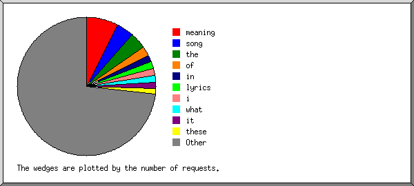
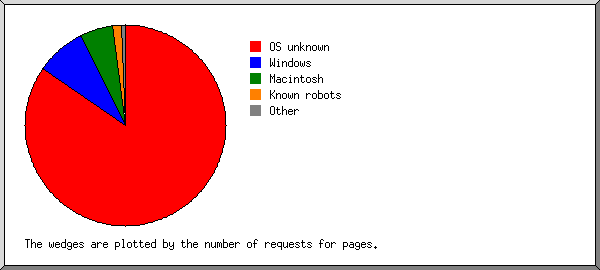
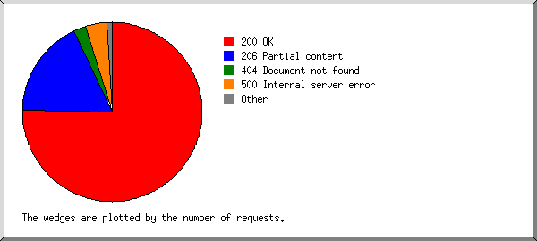

Web Server Statistics for songabout.fm
Web Server Statistics for songabout.fm
Program started on Sat, Jun 21 2014 at 6:33 AM.
Analyzed requests from Sun, Mar 30 2014 at 2:37 PM to Sat, Jun 21 2014 at 6:13 AM (82.65 days).
Web Server Statistics for songabout.fmProgram started on Sat, Jun 21 2014 at 6:33 AM.
Analyzed requests from Sun, Mar 30 2014 at 2:37 PM to Sat, Jun 21 2014 at 6:13 AM (82.65 days).
(Go To: Top | General Summary | Monthly Report | Daily Summary | Hourly Summary | Domain Report | Organization Report | Failed Referrer Report | Referring Site Report | Search Word Report | Browser Report | Browser Summary | Operating System Report | Status Code Report | File Size Report | File Type Report | Directory Report | Request Report)
Figures in parentheses refer to the 7-day period ending Jun 21 2014 at 6:33 AM.
Successful requests: 1,456,760 (44,072)
Average successful requests per day: 17,625 (6,295)
Successful requests for pages: 84,236 (601)
Average successful requests for pages per day: 1,019 (85)
Failed requests: 92,494 (123)
Redirected requests: 14 (0)
Distinct files requested: 442,474 (2,812)
Distinct hosts served: 1,913 (299)
Data transferred: 13.17 gigabytes (333.45 megabytes)
Average data transferred per day: 163.21 megabytes (47.64 megabytes)
(Go To: Top | General Summary | Monthly Report | Daily Summary | Hourly Summary | Domain Report | Organization Report | Failed Referrer Report | Referring Site Report | Search Word Report | Browser Report | Browser Summary | Operating System Report | Status Code Report | File Size Report | File Type Report | Directory Report | Request Report)
Each unit ( ) represents 1,500 requests for pages or part thereof.
) represents 1,500 requests for pages or part thereof.
| month | #reqs | #pages | |
|---|---|---|---|
| Mar 2014 | 1101 | 31 | |
| Apr 2014 | 987156 | 56641 |    |
| May 2014 | 319625 | 22928 |  |
| Jun 2014 | 148878 | 4636 | |
Busiest month: Apr 2014 (56,641 requests for pages).
(Go To: Top | General Summary | Monthly Report | Daily Summary | Hourly Summary | Domain Report | Organization Report | Failed Referrer Report | Referring Site Report | Search Word Report | Browser Report | Browser Summary | Operating System Report | Status Code Report | File Size Report | File Type Report | Directory Report | Request Report)
Each unit () represents 400 requests for pages or part thereof.
| day | #reqs | #pages | |
|---|---|---|---|
| Sun | 196476 | 12979 | |
| Mon | 220755 | 17384 |  |
| Tue | 210660 | 9454 | |
| Wed | 159629 | 9527 | |
| Thu | 211394 | 11984 | |
| Fri | 231156 | 12153 | |
| Sat | 226690 | 10755 | |
(Go To: Top | General Summary | Monthly Report | Daily Summary | Hourly Summary | Domain Report | Organization Report | Failed Referrer Report | Referring Site Report | Search Word Report | Browser Report | Browser Summary | Operating System Report | Status Code Report | File Size Report | File Type Report | Directory Report | Request Report)
Each unit () represents 150 requests for pages or part thereof.
| hour | #reqs | #pages | |
|---|---|---|---|
| 0 | 56484 | 3217 | |
| 1 | 53420 | 2729 | |
| 2 | 55291 | 2765 | |
| 3 | 59874 | 3447 | |
| 4 | 59029 | 3393 | |
| 5 | 60671 | 3078 | |
| 6 | 65247 | 3822 | |
| 7 | 62627 | 3443 | |
| 8 | 56187 | 2650 | |
| 9 | 57744 | 3588 | |
| 10 | 60464 | 3206 | |
| 11 | 64274 | 3626 | |
| 12 | 62336 | 3810 | |
| 13 | 60759 | 3808 | |
| 14 | 59832 | 3581 | |
| 15 | 66320 | 4185 | |
| 16 | 73535 | 5250 | |
| 17 | 62966 | 4142 | |
| 18 | 62475 | 3537 | |
| 19 | 61224 | 3491 | |
| 20 | 62488 | 3573 | |
| 21 | 56788 | 3271 | |
| 22 | 59905 | 3446 | |
| 23 | 56820 | 3178 | |
(Go To: Top | General Summary | Monthly Report | Daily Summary | Hourly Summary | Domain Report | Organization Report | Failed Referrer Report | Referring Site Report | Search Word Report | Browser Report | Browser Summary | Operating System Report | Status Code Report | File Size Report | File Type Report | Directory Report | Request Report)
Listing domains, sorted by the amount of traffic.
| #reqs | %bytes | domain |
|---|---|---|
| 123376 | 100% | [unresolved numerical addresses] |
(Go To: Top | General Summary | Monthly Report | Daily Summary | Hourly Summary | Domain Report | Organization Report | Failed Referrer Report | Referring Site Report | Search Word Report | Browser Report | Browser Summary | Operating System Report | Status Code Report | File Size Report | File Type Report | Directory Report | Request Report)

Listing the top 20 organizations by the number of requests, sorted by the number of requests.
| #reqs | %bytes | organization |
|---|---|---|
| 21882 | 7.19% | 37 |
| 14701 | 4.81% | 66.249 |
| 10766 | 21.47% | 69 |
| 8889 | 3.83% | 66.220 |
| 8841 | 2.81% | 198.143 |
| 4273 | 12.34% | 173.252 |
| 2335 | 1.01% | 5 |
| 1892 | 0.73% | 144.76 |
| 1605 | 1.31% | 98 |
| 1569 | 0.66% | 91 |
| 1559 | 1.10% | 107 |
| 1342 | 0.46% | 180.76 |
| 1262 | 1.35% | 82 |
| 1205 | 0.95% | 108 |
| 1089 | 1.30% | 74 |
| 1086 | 0.81% | 77 |
| 1062 | 1.30% | 70 |
| 1019 | 0.48% | 78 |
| 989 | 0.29% | 81.209 |
| 941 | 0.97% | 50 |
| 35069 | 34.84% | [not listed: 530 organizations] |
(Go To: Top | General Summary | Monthly Report | Daily Summary | Hourly Summary | Domain Report | Organization Report | Failed Referrer Report | Referring Site Report | Search Word Report | Browser Report | Browser Summary | Operating System Report | Status Code Report | File Size Report | File Type Report | Directory Report | Request Report)

Listing referring URLs, sorted by the number of failed requests.
(Go To: Top | General Summary | Monthly Report | Daily Summary | Hourly Summary | Domain Report | Organization Report | Failed Referrer Report | Referring Site Report | Search Word Report | Browser Report | Browser Summary | Operating System Report | Status Code Report | File Size Report | File Type Report | Directory Report | Request Report)

Listing the top 30 referring sites by the number of requests, sorted by the number of requests.
| #reqs | site |
|---|---|
| 23001 | http://songabout.fm/ |
| 17244 | http://www.songabout.fm/ |
| 494 | http://www.google.com/ |
| 316 | https://www.google.com/ |
| 61 | https://www.google.co.uk/ |
| 59 | http://www.google.co.uk/ |
| 56 | http://translate.googleusercontent.com/ |
| 55 | http://webcache.googleusercontent.com/ |
| 42 | http://scans.zoompf.com/ |
| 25 | https://www.google.ca/ |
| 13 | https://www.google.com.au/ |
| 12 | http://www.google.co.in/ |
| 10 | https://www.google.nl/ |
| 10 | http://www.google.ca/ |
| 9 | https://www.google.co.in/ |
| 8 | https://www.google.co.id/ |
| 8 | http://semalt.semalt.com/ |
| 7 | http://www.google.com.au/ |
| 7 | https://www.google.com.br/ |
| 7 | http://www.google.se/ |
| 7 | https://www.google.de/ |
| 6 | http://www.google.com.sg/ |
| 6 | https://www.google.com.mx/ |
| 6 | https://www.google.sk/ |
| 5 | https://www.google.com.sg/ |
| 5 | http://www.google.pl/ |
| 5 | https://www.google.it/ |
| 5 | https://www.google.com.ph/ |
| 5 | https://www.google.co.za/ |
| 4 | https://www.google.com.hk/ |
| 130 | [not listed: 76 sites] |
(Go To: Top | General Summary | Monthly Report | Daily Summary | Hourly Summary | Domain Report | Organization Report | Failed Referrer Report | Referring Site Report | Search Word Report | Browser Report | Browser Summary | Operating System Report | Status Code Report | File Size Report | File Type Report | Directory Report | Request Report)

Listing the top 30 query words by the number of requests, sorted by the number of requests.
| #reqs | search term |
|---|---|
| 69 | meaning |
| 37 | song |
| 34 | the |
| 21 | of |
| 15 | in |
| 15 | lyrics |
| 15 | i |
| 14 | what |
| 13 | it |
| 12 | these |
| 11 | a |
| 10 | days |
| 10 | and |
| 10 | that |
| 10 | does |
| 9 | is |
| 9 | my |
| 8 | to |
| 7 | you |
| 7 | who |
| 6 | like |
| 6 | just |
| 5 | let |
| 5 | no |
| 5 | so |
| 5 | pussy |
| 5 | shit |
| 5 | could |
| 5 | get |
| 5 | sink |
| 524 | [not listed: 350 search terms] |
(Go To: Top | General Summary | Monthly Report | Daily Summary | Hourly Summary | Domain Report | Organization Report | Failed Referrer Report | Referring Site Report | Search Word Report | Browser Report | Browser Summary | Operating System Report | Status Code Report | File Size Report | File Type Report | Directory Report | Request Report)

Listing the top 40 browsers by the number of requests for pages, sorted by the number of requests for pages.
| #reqs | #pages | browser |
|---|---|---|
| 23176 | 2700 | facebookexternalhit/1.1 (+http://www.facebook.com/externalhit_uatext.php) |
| 540 | 58 | Mozilla/5.0 (Windows NT 6.2; WOW64; rv:29.0) Gecko/20100101 Firefox/29.0 |
| 14430 | 54 | Mozilla/5.0 (compatible; Googlebot/2.1; +http://www.google.com/bot.html) |
| 267 | 53 | Mozilla/5.0 (Macintosh; Intel Mac OS X 10.9; rv:30.0) Gecko/20100101 Firefox/30.0 |
| 481 | 49 | Mozilla/5.0 (compatible; YandexBot/3.0; +http://yandex.com/bots) |
| 378 | 40 | Mozilla/5.0 (Windows NT 6.1; rv:30.0) Gecko/20100101 Firefox/30.0 |
| 17123 | 28 | Mozilla/5.0 (compatible; MJ12bot/v1.4.5; http://www.majestic12.co.uk/bot.php?+) |
| 414 | 26 | Mozilla/5.0 (Windows NT 6.1; rv:29.0) Gecko/20100101 Firefox/29.0 |
| 1349 | 24 | Mozilla/5.0 (compatible; Baiduspider/2.0; +http://www.baidu.com/search/spider.html) |
| 258 | 22 | Mozilla/5.0 (Macintosh; Intel Mac OS X 10_9_2) AppleWebKit/537.36 (KHTML, like Gecko) Chrome/35.0.1916.153 Safari/537.36 |
| 306 | 17 | Mozilla/5.0 (Macintosh; Intel Mac OS X 10_9_3) AppleWebKit/537.36 (KHTML, like Gecko) Chrome/35.0.1916.153 Safari/537.36 |
| 315 | 17 | Mozilla/5.0 (Macintosh; Intel Mac OS X 10.9; rv:29.0) Gecko/20100101 Firefox/29.0 |
| 2462 | 15 | Mozilla/5.0 (iPhone; CPU iPhone OS 7_1_1 like Mac OS X) AppleWebKit/537.51.2 (KHTML, like Gecko) Version/7.0 Mobile/11D201 Safari/9537.53 |
| 294 | 12 | Mozilla/5.0 (compatible; bingbot/2.0; +http://www.bing.com/bingbot.htm) |
| 10 | 10 | Mozilla/5.0 (compatible; Yahoo! Slurp; http://help.yahoo.com/help/us/ysearch/slurp) |
| 72 | 10 | Mozilla/5.0 (Windows NT 5.1) AppleWebKit/537.36 (KHTML, like Gecko) Chrome/31.0.1650.63 Safari/537.36 |
| 2077 | 9 | Mozilla/5.0 (Windows NT 6.1; WOW64) AppleWebKit/537.36 (KHTML, like Gecko) Chrome/35.0.1916.114 Safari/537.36 |
| 12 | 9 | Mozilla/5.0 (Windows NT 6.2; Win64; x64) AppleWebKit/537.36 (KHTML, like Gecko) Chrome/32.0.1667.0 Safari/537.36 |
| 242 | 8 | Mozilla/5.0 (Windows NT 6.1; WOW64) AppleWebKit/537.36 (KHTML, like Gecko) Chrome/32.0.1700.107 Safari/537.36 |
| 956 | 8 | Mozilla/5.0 (Windows NT 6.3; WOW64) AppleWebKit/537.36 (KHTML, like Gecko) Chrome/35.0.1916.114 Safari/537.36 |
| 108 | 7 | Mozilla/4.0 (compatible; MSIE 6.0; Windows NT 5.1; SV1) |
| 166 | 7 | Mozilla/5.0 (Windows NT 6.1) AppleWebKit/537.1 (KHTML, like Gecko) Chrome/21.0.1180.0 AOL/9.7 AOLBuild/4343.2039.US Safari/537.1 |
| 6 | 6 | Mozilla/5.0 (Windows; U; Windows NT 6.1; en-GB; rv:1.9.2.3) Gecko/20100401 Firefox/3.6.3 (NetShelter ContentScan) |
| 1691 | 6 | Mozilla/5.0 (Windows NT 6.1; WOW64) AppleWebKit/537.36 (KHTML, like Gecko) Chrome/35.0.1916.153 Safari/537.36 |
| 83 | 6 | Mozilla/5.0 (iPhone; CPU iPhone OS 6_0 like Mac OS X) AppleWebKit/536.26 (KHTML, like Gecko) Version/6.0 Mobile/10A5376e Safari/8536.25 (compatible; Googlebot/2.1; +http://www.google.com/bot.html) |
| 52 | 6 | Mozilla/5.0 (Windows NT 6.1; WOW64; rv:28.0) Gecko/20100101 Firefox/28.0 |
| 517 | 6 | Mozilla/5.0 (iPhone; CPU iPhone OS 7_0_4 like Mac OS X) AppleWebKit/537.51.1 (KHTML, like Gecko) Version/7.0 Mobile/11B554a Safari/9537.53 |
| 404 | 6 | Mozilla/5.0 (Macintosh; Intel Mac OS X 10_9_3) AppleWebKit/537.36 (KHTML, like Gecko) Chrome/35.0.1916.114 Safari/537.36 |
| 180 | 6 | Mozilla/5.0 (Macintosh; Intel Mac OS X 10_9_2) AppleWebKit/537.75.14 (KHTML, like Gecko) Version/7.0.3 Safari/537.75.14 |
| 8841 | 5 | Mozilla/5.0 (compatible; BLEXBot/1.0; +http://webmeup-crawler.com/) |
| 435 | 5 | Mozilla/5.0 (Windows NT 6.1) AppleWebKit/537.36 (KHTML, like Gecko) Chrome/35.0.1916.153 Safari/537.36 |
| 47 | 5 | Mozilla/5.0 (Windows NT 6.1; WOW64) AppleWebKit/537.36 (KHTML, like Gecko) Chrome/34.0.1847.116 Safari/537.36 |
| 360 | 5 | Mozilla/5.0 (Windows NT 6.3; WOW64) AppleWebKit/537.36 (KHTML, like Gecko) Chrome/35.0.1916.153 Safari/537.36 |
| 153 | 4 | Mozilla/5.0 (Macintosh; Intel Mac OS X 10_9_2) AppleWebKit/537.36 (KHTML, like Gecko) Chrome/35.0.1916.114 Safari/537.36 |
| 4 | 4 | nutch-1.4/Nutch-1.4 |
| 14 | 4 | Mozilla/4.0 (compatible; MSIE 6.0; Windows NT 5.1; SV1; Mozilla/4.0 (compatible; MSIE 6.0; Windows NT 5.1; SV1) ; .NET CLR 1.0.3705) |
| 21012 | 4 | Mozilla/5.0 (compatible; AhrefsBot/5.0; +http://ahrefs.com/robot/) |
| 118 | 3 | Mozilla/5.0 (compatible; DotBot/1.1; http://www.opensiteexplorer.org/dotbot, help@moz.com) |
| 137 | 3 | Mozilla/5.0 (Macintosh; Intel Mac OS X 10_8_5) AppleWebKit/537.36 (KHTML, like Gecko) Chrome/35.0.1916.114 Safari/537.36 |
| 12 | 3 | Mozilla/5.0 (Windows; U; Windows NT 5.1; en-US; rv:1.9.2.8) Gecko/20100721 Firefox/3.6.8 |
| 23817 | 106 | [not listed: 530 browsers] |
(Go To: Top | General Summary | Monthly Report | Daily Summary | Hourly Summary | Domain Report | Organization Report | Failed Referrer Report | Referring Site Report | Search Word Report | Browser Report | Browser Summary | Operating System Report | Status Code Report | File Size Report | File Type Report | Directory Report | Request Report)

Listing browsers with at least 1 request for a page, sorted by the number of requests for pages.
| # | #reqs | #pages | browser |
|---|---|---|---|
| 1 | 23176 | 2700 | facebookexternalhit |
| 23176 | 2700 | facebookexternalhit/1 | |
| 2 | 5567 | 234 | Firefox |
| 3000 | 102 | Firefox/29 | |
| 1248 | 93 | Firefox/30 | |
| 315 | 19 | Firefox/3 | |
| 161 | 7 | Firefox/28 | |
| 8 | 3 | Firefox/22 | |
| 77 | 3 | Firefox/6 | |
| 5 | 2 | Firefox/4 | |
| 9 | 1 | Firefox/20 | |
| 46 | 1 | Firefox/14 | |
| 1 | 1 | Firefox/24 | |
| 3 | 24730 | 197 | Safari |
| 14188 | 147 | Safari/537 | |
| 5837 | 32 | Safari/9537 | |
| 999 | 8 | Safari/8536 | |
| 238 | 3 | Safari/535 | |
| 260 | 3 | Safari/536 | |
| 744 | 2 | Safari/533 | |
| 2291 | 2 | Safari/534 | |
| 4 | 64679 | 194 | Netscape (compatible) |
| 5 | 1804 | 33 | MSIE |
| 195 | 17 | MSIE/6 | |
| 532 | 13 | MSIE/8 | |
| 64 | 2 | MSIE/7 | |
| 512 | 1 | MSIE/9 | |
| 6 | 4 | 4 | nutch-1.4 |
| 4 | 4 | nutch-1.4/Nutch-1 | |
| 7 | 4 | 4 | python-requests |
| 3 | 3 | python-requests/2 | |
| 1 | 1 | python-requests/1 | |
| 8 | 2 | 2 | Domnutch-Bot |
| 2 | 2 | Domnutch-Bot/Nutch-1 | |
| 9 | 1 | 1 | Google_Analytics_Snippet_Validator |
| 10 | 1 | 1 | PagesInventory (robot +http: |
| 1 | 1 | PagesInventory (robot +http://www | |
| 11 | 3 | 1 | SAMSUNG-SGH-E250 |
| 3 | 1 | SAMSUNG-SGH-E250/1 | |
| 12 | 1 | 1 | curl |
| 1 | 1 | curl/7 | |
| 13 | 1196 | 1 | Opera |
| 1179 | 1 | Opera/9 | |
| 14 | 986 | 1 | Mozilla |
| 15 | 989 | 1 | netEstate NE Crawler (+http: |
| 989 | 1 | netEstate NE Crawler (+http://www | |
| 16 | 1 | 1 | niki-bot |
| 175 | 0 | [not listed: 16 browsers] |
(Go To: Top | General Summary | Monthly Report | Daily Summary | Hourly Summary | Domain Report | Organization Report | Failed Referrer Report | Referring Site Report | Search Word Report | Browser Report | Browser Summary | Operating System Report | Status Code Report | File Size Report | File Type Report | Directory Report | Request Report)

Listing operating systems, sorted by the number of requests for pages.
| # | #reqs | #pages | OS |
|---|---|---|---|
| 1 | 58384 | 2857 | OS unknown |
| 2 | 16012 | 271 | Windows |
| 14256 | 228 | Unknown Windows | |
| 1696 | 41 | Windows XP | |
| 6 | 1 | Windows 98 | |
| 40 | 1 | Windows Server 2003 | |
| 4 | 0 | Windows 95 | |
| 10 | 0 | Windows 2000 | |
| 3 | 11294 | 180 | Macintosh |
| 4 | 32391 | 50 | Known robots |
| 5 | 5238 | 18 | Unix |
| 5160 | 18 | Linux | |
| 78 | 0 | Other Unix |
(Go To: Top | General Summary | Monthly Report | Daily Summary | Hourly Summary | Domain Report | Organization Report | Failed Referrer Report | Referring Site Report | Search Word Report | Browser Report | Browser Summary | Operating System Report | Status Code Report | File Size Report | File Type Report | Directory Report | Request Report)

Listing status codes, sorted numerically.
| #reqs | status code |
|---|---|
| 98945 | 200 OK |
| 23198 | 206 Partial content |
| 1233 | 304 Not modified since last retrieval |
| 3020 | 404 Document not found |
| 5033 | 500 Internal server error |
(Go To: Top | General Summary | Monthly Report | Daily Summary | Hourly Summary | Domain Report | Organization Report | Failed Referrer Report | Referring Site Report | Search Word Report | Browser Report | Browser Summary | Operating System Report | Status Code Report | File Size Report | File Type Report | Directory Report | Request Report)

| size | #reqs | %bytes |
|---|---|---|
| 0 | 1241 | |
| 1B- 10B | 10 | |
| 11B- 100B | 34 | |
| 101B- 1kB | 6278 | 0.33% |
| 1kB- 10kB | 104296 | 34.59% |
| 10kB-100kB | 11415 | 61.66% |
| 100kB- 1MB | 102 | 3.42% |
(Go To: Top | General Summary | Monthly Report | Daily Summary | Hourly Summary | Domain Report | Organization Report | Failed Referrer Report | Referring Site Report | Search Word Report | Browser Report | Browser Summary | Operating System Report | Status Code Report | File Size Report | File Type Report | Directory Report | Request Report)

Listing extensions with at least 0.1% of the traffic, sorted by the amount of traffic.
| #reqs | %bytes | extension |
|---|---|---|
| 198003 | 72.78% | .png [PNG graphics] |
| 725180 | 25.25% | [no extension] |
| 8015 | 0.44% | .jpg [JPEG graphics] |
| 11159 | 0.38% | .js [JavaScript code] |
| 1512 | 0.20% | .swf |
| 3670 | 0.16% | [directories] |
| 2524 | 0.15% | .php [PHP] |
| 13742 | 0.10% | .css [Cascading Style Sheets] |
| 16889 | 0.55% | [not listed: 7,209 extensions] |
(Go To: Top | General Summary | Monthly Report | Daily Summary | Hourly Summary | Domain Report | Organization Report | Failed Referrer Report | Referring Site Report | Search Word Report | Browser Report | Browser Summary | Operating System Report | Status Code Report | File Size Report | File Type Report | Directory Report | Request Report)

Listing directories with at least 0.01% of the traffic, sorted by the amount of traffic.
| #reqs | %bytes | directory |
|---|---|---|
| 205280 | 71.42% | /images/ |
| 712546 | 24.64% | /artist/ |
| 28939 | 2.94% | /~songabou/ |
| 12676 | 0.58% | /scripts/ |
| 7486 | 0.31% | [root directory] |
| 13740 | 0.10% | /styles/ |
| 27 | [not listed: 3 directories] |
(Go To: Top | General Summary | Monthly Report | Daily Summary | Hourly Summary | Domain Report | Organization Report | Failed Referrer Report | Referring Site Report | Search Word Report | Browser Report | Browser Summary | Operating System Report | Status Code Report | File Size Report | File Type Report | Directory Report | Request Report)

Listing files with at least 20 requests, sorted by the number of requests.
| #reqs | %bytes | last time | file |
|---|---|---|---|
| 143207 | 63.06% | Jun/21/14 6:13 AM | /images/logos/logoSongAboutFooter.png |
| 9059 | 0.24% | Jun/21/14 5:55 AM | /images/noSGcover.png |
| 5737 | 0.28% | Jun/21/14 6:13 AM | /images/logos/songaboutNavLogo.png |
| 3332 | 0.15% | Jun/21/14 6:13 AM | / |
| 3205 | 0.03% | Jun/21/14 5:55 AM | /scripts/hooks/echonest-hook.js |
| 3189 | 0.02% | Jun/21/14 5:55 AM | /scripts/facebook/facebookLogin.js |
| 3127 | Jun/21/14 5:55 AM | /styles/homepageImage.css | |
| 3124 | 0.02% | Jun/21/14 5:55 AM | /styles/album.css |
| 3119 | 0.02% | Jun/21/14 5:55 AM | /styles/artist.css |
| 3096 | 0.02% | Jun/21/14 5:55 AM | /styles/song.css |
| 2887 | 0.02% | Jun/21/14 5:55 AM | /scripts/soundmanager/songabout-hook.js |
| 2879 | 0.14% | Jun/21/14 5:55 AM | /images/nav/lyrics.jpg |
| 2877 | 0.15% | Jun/21/14 5:55 AM | /images/nav/albums.jpg |
| 2869 | 0.08% | Jun/21/14 5:55 AM | /images/nav/search.png |
| 2836 | 2.04% | Jun/21/14 5:55 AM | /images/icons/iconFooterEmail.png |
| 2811 | 0.06% | Jun/21/14 5:55 AM | /images/buttons/sa_twitter_icon.png |
| 2809 | 0.05% | Jun/21/14 5:55 AM | /images/buttons/footer_google.png |
| 2804 | 0.04% | Jun/21/14 5:55 AM | /images/buttons/footer_twitter.png |
| 2801 | 0.03% | Jun/21/14 5:55 AM | /images/buttons/footer_facebook.png |
| 2797 | 0.05% | Jun/21/14 5:55 AM | /images/buttons/sa_instagram_icon.png |
| 2797 | 0.05% | Jun/21/14 5:55 AM | /images/buttons/sa_tumblr_icon.png |
| 2587 | 1.57% | Jun/21/14 5:55 AM | /images/icons/songaboutIconShare.png |
| 2581 | 1.56% | Jun/21/14 5:55 AM | /images/icons/songaboutIconFB.png |
| 2436 | 0.08% | Jun/21/14 5:55 AM | /images/buttons/music_button.png |
| 2430 | 0.09% | Jun/21/14 5:55 AM | /images/buttons/play_video_button.png |
| 1675 | 0.02% | Jun/21/14 5:50 AM | /favicon.ico |
| 1512 | 0.20% | Jun/21/14 5:55 AM | /scripts/soundmanager/swf/soundmanager2_flash9_debug.swf |
| 1485 | 0.07% | Jun/21/14 4:50 AM | /artist.php |
| 61 | Jun/20/14 6:55 AM | /artist.php?letter=A | |
| 61 | Jun/21/14 1:48 AM | /artist.php?letter=F | |
| 60 | Jun/20/14 3:03 PM | /artist.php?letter=D | |
| 60 | Jun/20/14 6:55 AM | /artist.php?letter=G | |
| 60 | Jun/21/14 4:50 AM | /artist.php?letter=P | |
| 59 | Jun/20/14 6:55 AM | /artist.php?letter=M | |
| 57 | Jun/20/14 6:55 AM | /artist.php?letter=E | |
| 57 | Jun/20/14 6:55 AM | /artist.php?letter=I | |
| 55 | Jun/20/14 6:55 AM | /artist.php?letter=H | |
| 55 | Jun/20/14 6:55 AM | /artist.php?letter=K | |
| 55 | Jun/20/14 12:51 PM | /artist.php?letter=N | |
| 54 | Jun/20/14 6:55 AM | /artist.php?letter=C | |
| 53 | Jun/20/14 6:56 AM | /artist.php?letter=T | |
| 53 | Jun/20/14 6:55 AM | /artist.php?letter=B | |
| 53 | Jun/20/14 6:55 AM | /artist.php?letter=O | |
| 52 | Jun/20/14 6:56 AM | /artist.php?letter=Z | |
| 52 | Jun/20/14 8:48 PM | /artist.php?letter=J | |
| 51 | Jun/20/14 6:56 AM | /artist.php?letter=X | |
| 51 | Jun/20/14 6:56 AM | /artist.php?letter=Y | |
| 51 | Jun/20/14 8:49 PM | /artist.php?letter=L | |
| 51 | Jun/20/14 6:55 AM | /artist.php?letter=R | |
| 50 | Jun/20/14 6:56 AM | /artist.php?letter=S | |
| 48 | Jun/20/14 6:55 AM | /artist.php?letter=Q | |
| 45 | Jun/20/14 6:56 AM | /artist.php?letter=U | |
| 44 | Jun/20/14 6:56 AM | /artist.php?letter=W | |
| 43 | Jun/20/14 6:56 AM | /artist.php?letter=V | |
| 1274 | 0.04% | Jun/21/14 5:55 AM | /styles/main.css |
| 1133 | 0.06% | Jun/21/14 5:55 AM | /images/nav/artists.jpg |
| 1126 | 0.09% | Jun/21/14 5:55 AM | /images/nav/verified_artists.jpg |
| 1046 | 0.70% | Jun/20/14 4:02 PM | /images/icons/iconFooterCall.png |
| 946 | Jun/21/14 5:55 AM | /scripts/simpSocialPop.js | |
| 932 | 0.31% | Jun/21/14 5:55 AM | /scripts/soundmanager/soundmanager2.js |
| 842 | 0.01% | Jun/21/14 5:55 AM | /images/buttons/sa_facebook_icon.png |
| 820 | 0.01% | Jun/21/14 5:55 AM | /images/buttons/footer_tumblr.png |
| 799 | 0.04% | Jun/21/14 5:55 AM | /images/buttons/claim_page_button.png |
| 799 | 0.50% | Jun/21/14 5:55 AM | /images/icons/songaboutIconTwitter.png |
| 780 | 0.04% | Jun/21/14 5:55 AM | /images/buttons/biography_button.png |
| 610 | 0.39% | Jun/20/14 4:51 PM | /images/backgrounds/songaboutSectionBG.png |
| 484 | 1.61% | Jun/20/14 4:51 PM | /~songabou/images/homePageSlides/songaboutSlideRihanna.png |
| 327 | 0.01% | Jun/20/14 9:31 PM | /images/buttons/playButton.png |
| 223 | 0.01% | Jun/20/14 6:09 PM | /images/buttons/buttonBuyShirt.png |
| 222 | 0.02% | Jun/20/14 9:39 PM | /albums.php |
| 188 | 0.01% | Jun/20/14 4:26 PM | /songabout-careers.php |
| 175 | 0.01% | Jun/20/14 6:38 PM | /search-results.php |
| 10 | Jun/17/14 10:49 AM | /search-results.php?search=fancy | |
| 141 | 0.01% | Jun/17/14 11:55 PM | /artist/Ellie-Goulding/song/Burn |
| 129 | 0.01% | Jun/21/14 1:55 AM | /privacy-policy.php |
| 124 | 0.01% | Jun/20/14 11:45 PM | /artist/OneRepublic/song/Counting-Stars |
| 21 | Jun/17/14 10:04 AM | /artist/OneRepublic/song/Counting-Stars?cache=true | |
| 123 | 0.01% | Jun/18/14 10:46 PM | /artist/Katy-Perry/song/Dark-Horse |
| 119 | Jun/20/14 4:24 PM | /~songabou/images/buttons/verify_me.png | |
| 90 | Jun/21/14 1:55 AM | /lyrics.php | |
| 84 | Jun/20/14 4:51 PM | /images/homePageSlides/songaboutSlideRihannaBG.png | |
| 83 | 0.01% | Jun/20/14 9:43 PM | /artist/Iggy-Azalea/song/Fancy-featuring-Charli-XCX |
| 75 | Jun/20/14 3:19 AM | /artist/Imagine-Dragons/album/Night-Visions | |
| 75 | Jun/19/14 5:39 AM | /~songabou/artist/Jason Der%C3%BClo | |
| 74 | Jun/18/14 4:27 AM | /artist/Calvin-Harris/song/Summer | |
| 67 | Jun/19/14 5:30 AM | /artist/Dirty-South/song/Phazing-(Ti%C3%ABsto-Remix) | |
| 61 | Jun/20/14 2:55 PM | /images/buttons/header_google.png | |
| 61 | Jun/20/14 2:55 PM | /images/buttons/header_like.png | |
| 59 | Jun/19/14 4:38 AM | /artist/Passenger/song/Let-Her-Go | |
| 57 | 0.01% | Jun/21/14 1:55 AM | /conditions.php |
| 56 | Jun/19/14 5:30 AM | /artist/Daft-Punk/song/Doin%E2%80%99-It-Right-(feat.-Panda-Bear) | |
| 55 | Jun/20/14 2:55 PM | /images/aboutHeaderImageBG.png | |
| 54 | 0.07% | Jun/16/14 7:18 AM | /~songabou/images/aboutHeaderImageNew.png |
| 53 | Jun/19/14 5:29 AM | /artist/Ashlee-Simpson/song/Outta-My-Head-(Ay-Ya-Ya)-(Dave-Aud%C3%A9-Remix---Radio-Edit) | |
| 53 | Jun/20/14 1:24 PM | /artist/Jason-Der%C3%BClo/bio | |
| 51 | 0.10% | Jun/20/14 4:26 PM | /~songabou/images/aboutHeaderImage.png |
| 50 | Jun/20/14 4:25 PM | /verified_artist.php | |
| 49 | Jun/19/14 2:06 PM | /artist/Katy-Perry | |
| 48 | Jun/20/14 11:58 PM | /artist/Avicii | |
| 47 | 0.01% | Jun/20/14 4:12 PM | /artist/Roald-Velden |
| 47 | Jun/19/14 5:37 AM | /artist/Regina-Spektor/song/D%C3%BCsseldorf-(Bonus-Album-Version) | |
| 45 | Jun/20/14 2:55 PM | /images/buttons/edit_video.png | |
| 44 | Jun/20/14 2:55 PM | /images/buttons/submit_button.png | |
| 43 | Jun/20/14 3:12 PM | /artist/Coldplay/album/Ghost-Stories | |
| 42 | Jun/20/14 6:32 PM | /artist/David-Guetta/album/Nothing-But-the-Beat | |
| 42 | Jun/19/14 10:55 PM | /artist/Poli%C3%A7a | |
| 42 | Jun/19/14 2:11 AM | /artist/Coldplay | |
| 41 | Apr/ 6/14 5:17 PM | /images/buttons/header_facebook.png | |
| 41 | Jun/19/14 5:12 AM | /artist/%C2%A1All-Time-Quarterback! | |
| 41 | Jun/15/14 7:34 AM | /artist/Michael-Jackson/song/Off-the-Wall | |
| 39 | Apr/ 6/14 3:38 PM | /images/buttons/header_twitter.png | |
| 38 | Jun/19/14 5:14 AM | /artist/Belinda/song/Boba-Ni%C3%B1a-Nice-(Remix-Ni%C3%B1o-Power) | |
| 38 | Jun/20/14 1:24 PM | /artist/Kany-Garc%C3%ADa | |
| 38 | Jun/19/14 5:24 PM | /artist/Beyonce | |
| 38 | Jun/20/14 1:09 AM | /about-us.php | |
| 38 | Jun/19/14 5:15 AM | /artist/Belinda/song/Ni%C3%B1a-De-Ayer-(Everyday-Girl) | |
| 38 | Jun/19/14 12:16 PM | /artist/Avicii/song/Wake-Me-Up | |
| 37 | Jun/16/14 12:09 PM | /artist/Coldplay/song/Magic | |
| 37 | Jun/19/14 5:31 AM | /artist/Ellie-Goulding/song/Burn-(Ti%C3%ABsto's-Club-Life-Remix) | |
| 36 | Jun/19/14 5:19 AM | /artist/Jeans/song/Como-Olvidarte-(Version-Norte%C3%B1a) | |
| 36 | Jun/19/14 5:15 AM | /artist/Belinda/song/Boba-Ni%C3%B1a-Nice-(Teenage-Superstar)-(Ni%C3%B1o-Powser-Mix) | |
| 36 | Jun/19/14 2:54 PM | /artist/Naughty-Boy/song/Wonder-(Kidnap-Kid-Remix)-[feat.-Emeli-Sand%C3%A9] | |
| 36 | Jun/19/14 5:26 AM | /artist/Sentidos-Opuestos/song/Ardiente-Tentaci%C3%B3n-(Live) | |
| 36 | Jun/19/14 5:20 AM | /artist/La-Quinta-Estaci%C3%B3n/bio | |
| 35 | Jun/20/14 1:21 PM | /artist/Beyonc%C3%A9/song/Why-Don't-You-Love-Me | |
| 35 | Jun/19/14 5:30 AM | /artist/Dirty-South-feat.-Rudy/song/Phazing-(Ti%C3%ABsto-Remix) | |
| 35 | Jun/19/14 5:38 AM | /artist/S%C3%A9bastien-L%C3%A9ger | |
| 35 | 0.01% | Jun/19/14 5:13 AM | /artist/Ana-B%C3%A1rbara |
| 35 | Jun/19/14 5:15 AM | /artist/Belinda/song/Boba-Ni%C3%B1a-Nice-(Teenage-Superstar) | |
| 35 | Jun/19/14 5:21 AM | /artist/M%C3%BDa/bio | |
| 35 | Jun/20/14 1:21 PM | /artist/Chayanne/song/Baila-Baila-(Mem%C3%A9's-Boriqua-Radio-Edit) | |
| 35 | Jun/20/14 1:20 PM | /artist/Beyonc%C3%A9/song/That's-How-You-Like-It | |
| 35 | Jun/20/14 1:20 PM | /artist/Beyonc%C3%A9/song/Schoolin'-Life | |
| 35 | Jun/20/14 2:06 PM | /artist/Ricky-Martin/song/Mar%C3%ADa-(MTV-Unplugged-Version) | |
| 35 | Jun/19/14 5:26 AM | /artist/Sentidos-Opuestos/song/Fuego-Y-Pasi%C3%B3n-(Live) | |
| 35 | Jun/19/14 5:21 AM | /artist/Man%C3%A1/bio | |
| 35 | Jun/19/14 3:16 PM | /artist/Naughty-Boy/song/Wonder-(Mojam-Remix)-[feat.-Emeli-Sand%C3%A9] | |
| 35 | Jun/20/14 2:04 PM | /artist/Ricky-Martin/song/Be-Careful-(Cuidado-Con-Mi-Coraz%C3%B3n) | |
| 35 | Jun/20/14 3:43 PM | /artist/Katy-Perry/song/Unconditionally | |
| 35 | Jun/20/14 1:20 PM | /artist/Beyonc%C3%A9/song/That's-Why-You're-Beautiful | |
| 34 | Jun/19/14 5:13 AM | /artist/Anah%C3%AD/song/Mi-Delirio-(Ac%C3%BAstica) | |
| 34 | Jun/20/14 10:43 AM | /artist/Markus-Wagner/bio | |
| 34 | Jun/19/14 5:20 AM | /artist/Jeans/song/Mensajes-En-Botellas-(Version-Norte%C3%B1a) | |
| 34 | Jun/19/14 5:14 AM | /artist/Ashlee-Simpson/song/Outta-My-Head-(Ay-Ya-Ya)-(Dave-Aud%C3%A9-Dub-Instrumental) | |
| 34 | Jun/19/14 5:20 AM | /artist/Jennifer-Pe%C3%B1a | |
| 34 | Jun/19/14 5:20 AM | /artist/Jeans/song/Entre-Azul-y-Buenas-Noches-(Version-Norte%C3%B1a) | |
| 34 | Jun/13/14 7:51 AM | /artist/Lorde | |
| 34 | Jun/20/14 2:50 PM | /artist/Nicholas-Roy/bio | |
| 34 | Jun/21/14 1:46 AM | /artist/Amar-Singh-Chamkila-/bio | |
| 34 | Jun/20/14 8:49 PM | /artist/Pharrell-Williams | |
| 33 | Jun/19/14 5:13 AM | /artist/Andr%C3%A9-3000 | |
| 33 | Jun/20/14 1:21 PM | /artist/Chayanne/song/Dejar%C3%ADa-Todo-(Samba-Para-Ti) | |
| 33 | Jun/15/14 7:37 AM | /artist/Michael-Jackson/song/Man-in-the-Mirror | |
| 33 | Jun/20/14 2:05 PM | /artist/Ricky-Martin/song/Coraz%C3%B3n-Entre-Nubes-(Coracao-Nas-Nuvens) | |
| 33 | Jun/20/14 2:06 PM | /artist/Ricky-Martin/song/Mar%C3%ADa-(Pablo-Flores-Spanglish-Radio-Edit) | |
| 33 | Jun/19/14 5:27 AM | /artist/Thal%C3%ADa-A-Duo-Con-Joan-Sebastian/bio | |
| 33 | Jun/20/14 1:20 PM | /artist/Beyonc%C3%A9/song/Irreplaceable-(Irreemplazable)-(Nortena-Remix) | |
| 33 | Jun/20/14 2:03 PM | /artist/Ricky-Martin/song/Perdido-Sin-T%C3%AD-(MTV-Unplugged-Version) | |
| 33 | Jun/19/14 5:15 AM | /artist/Beyonc%C3%A9/song/Run-The-World-(Girls) | |
| 33 | Jun/20/14 1:20 PM | /artist/Beyonc%C3%A9/song/Single-Ladies-(Put-a-Ring-on-It) | |
| 33 | Jun/20/14 1:19 PM | /artist/Beyonc%C3%A9/song/Beautiful-Liar-(Remix) | |
| 32 | Jun/20/14 1:28 PM | /artist/Lindstr%C3%B8m/song/I-Feel-Space-(M.A.N.D.Y.-remix) | |
| 32 | Jun/20/14 1:19 PM | /artist/Beyonc%C3%A9/song/Beautiful-Liar-(Bello-Embustero)-(Spanish-Version) | |
| 32 | Jun/20/14 1:21 PM | /artist/Chayanne/song/Soy-Como-un-Ni%C3%B1o-(Looking-Through-The-Eyes-Of-A-Child) | |
| 32 | Jun/20/14 1:21 PM | /artist/Chayanne/song/Baila-Baila-(Mem%C3%AA's-Boriqua-Radio-Edit) | |
| 32 | Jun/20/14 1:21 PM | /artist/Beyonc%C3%A9/song/Why-Don't-You-Love-Me-(iTunes-preorder-bonus-track) | |
| 32 | Jun/20/14 1:20 PM | /artist/Beyonc%C3%A9/song/Run-the-World-(Girls) | |
| 32 | Jun/20/14 1:20 PM | /artist/Beyonc%C3%A9/song/Save-The-Hero-(iTunes-bonus-track) | |
| 32 | Jun/19/14 5:22 AM | /artist/Naughty-Boy/song/Wonder-(feat.-Emeli-Sand%C3%A9) | |
| 32 | Jun/20/14 1:20 PM | /artist/Beyonc%C3%A9/song/The-Closer-I-Get-To-You-(Duet-With-Beyonce-Knowles) | |
| 32 | Jun/20/14 1:19 PM | /artist/Beyonc%C3%A9/song/Hip-Hop-Star-(Feat-Big-Boi-%26-Sleepy-Brown)-2 | |
| 32 | Jun/19/14 5:13 AM | /artist/Ashlee-Simpson/song/Outta-My-Head-(Ay-Ya-Ya)-(Dave-Aud%C3%A9-Club-Dub) | |
| 32 | Jun/19/14 5:17 AM | /artist/Desireless/song/Tomb%C3%A9e-d'une-montagne | |
| 32 | Jun/20/14 1:21 PM | /artist/Chayanne/song/Salom%C3%A9-(Club-Mix-Radio-Edit) | |
| 32 | Jun/17/14 10:21 AM | /artist/Clean-Bandit/song/Rather-Be | |
| 32 | Jun/19/14 5:27 AM | /artist/Youngblood-Hawke/song/We-Come-Running-(Ti%C3%ABsto-Remix) | |
| 31 | Jun/20/14 1:28 PM | /artist/Lindstr%C3%B8m/song/I-Feel-Space-(Original) | |
| 31 | Jun/19/14 5:19 AM | /artist/Fey/song/Fr%C3%ADo-(En-Vivo) | |
| 31 | Jun/15/14 3:06 PM | /artist/Shakira/album/Shakira | |
| 31 | Jun/20/14 1:20 PM | /artist/Beyonc%C3%A9/song/Run-the-World-(Girls)-(Kaskade-Club-Remix) | |
| 31 | Jun/20/14 1:20 PM | /artist/Beyonc%C3%A9/song/Run-the-World-(Girls)-(RedTop-Club-Remix) | |
| 31 | Jun/20/14 1:19 PM | /artist/Beyonc%C3%A9/song/Get-Me-Bodied-(Extended-Mix) | |
| 31 | Jun/20/14 1:19 PM | /artist/Beyonc%C3%A9/song/Beautiful-Liar-(Spanglish-Version) | |
| 31 | Jun/19/14 5:19 AM | /artist/Fey/song/Mu%C3%A9velo-(En-Vivo) | |
| 31 | Jun/19/14 5:19 AM | /artist/Fey/song/Subid%C3%B3n-(En-Vivo) | |
| 30 | Jun/19/14 5:19 AM | /artist/Fey/song/Ni-T%C3%BA-Ni-Nadie-(En-Vivo) | |
| 30 | Jun/19/14 5:20 AM | /artist/Jos%C3%A9-Roberto/bio | |
| 30 | Jun/19/14 5:39 AM | /artist/Yeasayer/song/Madder-Red-(Henning-F%C3%BCrst-Mix) | |
| 30 | Jun/20/14 11:59 PM | /artist/Naughty-Boy/song/La-La-La | |
| 30 | Jun/20/14 1:19 PM | /artist/Beyonc%C3%A9/song/Beautiful-Liar-(Main-Version-/-Album-Version) | |
| 30 | Jun/19/14 5:33 AM | /artist/John-Dahlb%C3%A4ck/song/Zeus-(Original-Mix) | |
| 30 | Jun/20/14 4:43 PM | /artist/Sergio-Vargas/song/Dile | |
| 30 | Jun/19/14 5:13 AM | /artist/Ana%C3%AFs-Mitchell/bio | |
| 30 | Jun/19/14 5:33 AM | /artist/John-Dahlb%C3%A4ck/song/I-Had-A-Feeling-(Roman-Salzger-Remix) | |
| 30 | Jun/19/14 5:05 PM | /~songabou/artist/Christina-Perri/song/Sea-of-Lovers | |
| 30 | Jun/19/14 5:32 AM | /artist/John-Dahlb%C3%A4ck/song/Blink-(D.o.n.s-%26-Dbn-Chainsaw-Remix) | |
| 30 | Jun/20/14 2:04 PM | /artist/Ricky-Martin/song/P%C3%A9gate-(MTV-Unplugged-Version) | |
| 30 | Jun/19/14 5:17 AM | /artist/Destiny's-Child/song/My-Heart-Still-Beats-(Featuring-Beyonc%C3%A9) | |
| 30 | Jun/20/14 1:19 PM | /artist/Beyonc%C3%A9/song/Check-On-It-(feat.-Bun-B-and-Slim-Thug) | |
| 30 | Jun/19/14 5:32 AM | /artist/John-Dahlb%C3%A4ck/song/Everywhere-Ft-Andy-P-(Harry-Choo-Choo-Romero-Remix) | |
| 30 | Jun/19/14 5:19 AM | /artist/Fey/song/Gatos-en-el-Balc%C3%B3n-(En-Vivo) | |
| 30 | Jun/19/14 5:29 AM | /artist/Beirut/song/Forks-And-Knives-(La-F%C3%AAte) | |
| 29 | Jun/19/14 5:18 AM | /artist/Dominik-Eulberg/song/Die-3-Millionen-Musketiere-(Gabriel-Ananda-%E2%80%9EKleines-Woelkchen%E2%80%9C-remix) | |
| 29 | Jun/19/14 5:23 AM | /artist/Paty-Cant%C3%BA/song/Coraz%C3%B3n-Bipolar-(En-Vivo-Desde-Auditorio-Nacional-/-2013) | |
| 29 | Jun/19/14 3:41 PM | /artist/Clean-Bandit/song/Rather-Be-feat.-Jess-Glynne | |
| 29 | Jun/19/14 5:23 AM | /artist/Paty-Cant%C3%BA/song/Clavo-Que-Saca-Otro-Clavo-(En-Vivo-Desde-Auditoio-Nacional-/-2013) | |
| 29 | Jun/20/14 10:19 AM | /index.php | |
| 21 | Jun/20/14 10:19 AM | /index.php?option=com_jce&task=plugin&plugin=imgmanager&file=imgmanager&method=form&cid=20&6bc427c8a7981f4fe1f5ac65c1246b5f=cf6dd3cf1923c950586d0dd595c8e20b | |
| 29 | Jun/19/14 5:17 AM | /artist/Destiny's-Child/song/Apple-Pie-%C3%80-La-Mode | |
| 29 | Jun/20/14 11:59 PM | /artist/Shakira | |
| 29 | Jun/19/14 5:33 AM | /artist/John-Dahlb%C3%A4ck/song/Pyramid-(Dirty-South-Remix) | |
| 29 | Jun/19/14 5:18 AM | /artist/Fey/song/Desmargaritando-el-Coraz%C3%B3n-(En-Vivo) | |
| 29 | Jun/20/14 1:24 PM | /artist/Lindstr%C3%B8m/bio | |
| 29 | Jun/19/14 5:32 AM | /artist/John-Dahlb%C3%A4ck/song/Blink-(D.O.N.S.-%26-DBN-Chainsaw-Remix) | |
| 29 | Jun/19/14 5:32 AM | /artist/John-Dahlb%C3%A4ck/song/Blink-(Radio-Edit) | |
| 29 | 0.01% | Jun/20/14 1:28 AM | /artist/Quit-Your-Dayjob |
| 29 | Jun/19/14 5:26 AM | /artist/Saigon/song/And-the-Winner-Is%E2%80%A6(feat.-Bun-B) | |
| 29 | Jun/19/14 5:29 AM | /artist/Arcade-Fire/song/It%E2%80%99s-Never-Over-(Hey-Orpheus) | |
| 29 | Jun/19/14 5:32 AM | /artist/John-Dahlb%C3%A4ck/song/Blink-(Dim-Chris-Remix) | |
| 28 | Jun/17/14 8:21 PM | /artist/The-American-Analog-Set/bio | |
| 28 | Jun/18/14 6:09 AM | /artist/Jerrod-Niemann/song/Drink-to-That-All-Night | |
| 28 | Jun/19/14 5:23 AM | /artist/Paty-Cant%C3%BA/song/Beat-Goes-On-(En-Vivo-Desde-Auditorio-Nacional-/-2013) | |
| 28 | Jun/19/14 5:24 AM | /artist/Paty-Cant%C3%BA/song/Ojal%C3%A1-(En-Vivo-Desde-Auditorio-Nacional-/-2013) | |
| 28 | Jun/20/14 4:43 PM | /artist/Sergio-Vargas/song/Hab%C3%ADa-Una-Vez-Un-Merengue | |
| 28 | Jun/19/14 5:23 AM | /artist/Paty-Cant%C3%BA/song/Beat-Goes-On-(feat.-Boy-Blue) | |
| 28 | Jun/19/14 5:23 AM | /artist/Paty-Cant%C3%BA/song/Afortunadamente-No-Eres-T%C3%BA-(En-Vivo-Desde-Auditorio-Nacional-/-2013) | |
| 28 | Jun/19/14 5:23 AM | /artist/Paty-Cant%C3%BA/song/De-Nuevo-(En-Vivo-Desde-Auditorio-Nacional-/-2013) | |
| 28 | Jun/19/14 5:31 AM | /artist/EXO-K/song/%EB%91%90-%EA%B0%9C%EC%9D%98-%EB%8B%AC%EC%9D%B4-%EB%9C%A8%EB%8A%94-%EB%B0%A4-(TWO-MOONS)-(feat.-Key-of-SHINee) | |
| 28 | Jun/19/14 5:33 AM | /artist/John-Dahlb%C3%A4ck/song/World-Of-Love-(Pig-%26-Dan-Remix) | |
| 28 | Jun/19/14 5:24 AM | /artist/Paty-Cant%C3%BA/song/Goma-De-Mascar-(En-Vivo-Desde-Auditoio-Nacional-/-2013) | |
| 28 | Jun/19/14 5:31 AM | /artist/EXO-M/song/%E5%8F%8C%E6%9C%88%E4%B9%8B%E5%A4%9C-(TWO-MOONS)-(feat.-Key-of-SHINee) | |
| 28 | Jun/19/14 5:30 AM | /artist/EXO-K/song/%EB%84%88%EC%9D%98-%EC%84%B8%EC%83%81%EC%9C%BC%EB%A1%9C-(ANGEL) | |
| 28 | Jun/19/14 5:24 AM | /artist/Paty-Cant%C3%BA/song/Dos-Palabras-(En-Vivo-Desde-Auditorio-Nacional-/-2013) | |
| 28 | Jun/20/14 1:25 PM | /artist/Naughty-Boy/song/Wonder-Mojam-Remix-[feat-Emeli-Sand%C3%A9] | |
| 28 | Jun/19/14 5:23 AM | /artist/Paty-Cant%C3%BA/song/Aparador-(feat.-Mar%C3%ADa-Barracuda-y-Ni%C3%B1a-Dioz) | |
| 28 | Jun/19/14 5:23 AM | /artist/Paty-Cant%C3%BA/song/Dicen-Por-Ah%C3%AD-(En-Vivo-Desde-Auditorio-Nacional-/-2013) | |
| 28 | Jun/19/14 5:25 AM | /artist/RBD/song/Una-Canci%C3%B3n-(Live) | |
| 28 | Jun/19/14 5:23 AM | /artist/Paty-Cant%C3%BA/song/Always-On-My-Mind-(En-Vivo-Desde-Auditorio-Nacional-/-2013) | |
| 28 | Jun/19/14 5:19 AM | /artist/Fey/song/Un-a%C3%B1o-m%C3%A1s-(Bonus-track) | |
| 28 | Jun/19/14 5:18 AM | /artist/Fey/song/Az%C3%BAcar-Amargo-(En-Vivo) | |
| 28 | Jun/20/14 1:27 PM | /artist/BTOB/song/%EB%B9%84%EB%B0%80-(Insane) | |
| 28 | Jun/19/14 5:23 AM | /artist/Paty-Cant%C3%BA/song/Aparador-(En-Vivo-Desde-Auditorio-Nacional-/-2013) | |
| 27 | Jun/19/14 5:25 AM | /artist/Paty-Cant%C3%BA/song/Se-Desintegra-El-Amor-(En-Vivo-Desde-Auditorio-Nacional-/-2013) | |
| 27 | Jun/ 5/14 1:08 PM | /artist/Linval-Thompson-Meets-King-Tubby | |
| 27 | Jun/19/14 5:33 AM | /artist/John-Dahlb%C3%A4ck/song/World-Of-Love-(Club-Mix) | |
| 27 | Jun/20/14 12:24 PM | /~songabou/artist/Avicii/album/True | |
| 27 | Jun/19/14 5:24 AM | /artist/Paty-Cant%C3%BA/song/Quiero-Tenerte-(feat.-Erik-Rub%C3%ADn) | |
| 27 | Jun/19/14 5:24 AM | /artist/Paty-Cant%C3%BA/song/No-Fue-Suficiente-(En-Vivo-Desde-Auditorio-Nacional-/-2013) | |
| 27 | Jun/20/14 4:22 PM | /~songabou/artist/Avicii | |
| 27 | Jun/19/14 5:36 AM | /artist/Mirwais/song/Na%C3%AFve-Song-(Olav-Basoski-remix) | |
| 27 | Jun/20/14 9:14 AM | /artist/Imagine-Dragons/song/Demons | |
| 27 | Jun/19/14 5:25 AM | /artist/Paty-Cant%C3%BA/song/Quiero-X-2-(En-Vivo-Desde-Auditorio-Nacional-/-2013) | |
| 27 | Jun/19/14 5:18 AM | /artist/Dominik-Eulberg/song/Teddy-Tausendtod-(Stephan-Bodzin-%E2%80%9EZebra%E2%80%9C-remix) | |
| 27 | Jun/19/14 5:24 AM | /artist/Paty-Cant%C3%BA/song/Quiero-Tenerte-(En-Vivo-Desde-Auditorio-Nacional-/2013) | |
| 27 | Jun/19/14 5:24 AM | /artist/Paty-Cant%C3%BA/song/Por-Besarte-(En-Vivo-Desde-Auditorio-Nacional-/-2013) | |
| 27 | Jun/19/14 5:38 AM | /artist/TEEN-TOP/song/%EC%B6%A4%EC%B6%B0!-(Inst.) | |
| 27 | Jun/20/14 4:43 PM | /artist/Sergio-Vargas/song/El-Merengue-Se-Baila-Pegao | |
| 27 | Jun/21/14 2:40 AM | /~songabou/artist/Katy-Perry/album/Prism | |
| 27 | Jun/19/14 5:24 AM | /artist/Paty-Cant%C3%BA/song/Hechos-NO-Palabras! | |
| 27 | Jun/19/14 5:24 AM | /artist/Paty-Cant%C3%BA/song/Prefiero-Ser-Su-Amante-(En-Vivo-Desde-Auditorio-Nacional-/-2013) | |
| 27 | Jun/19/14 5:31 AM | /artist/EXO-M/song/%E4%BD%A0%E7%9A%84%E4%B8%96%E7%95%8C-(ANGEL) | |
| 26 | Jun/20/14 1:22 PM | /artist/Dulce-Mar%C3%ADa/song/Quien-Ser%C3%A1s%3F-(Live-From-El-Lunario-Mexico/2010) | |
| 26 | Jun/21/14 1:17 AM | /artist/Avril-Lavigne | |
| 26 | Jun/19/14 5:15 AM | /artist/Beyonc%C3%A9/song/In-Da-Club-Remix-[yillode] | |
| 26 | Jun/ 1/14 4:32 AM | /artist/Michael-Jackson/song/It's-the-Falling-in-Love | |
| 26 | Jun/20/14 12:24 PM | /~songabou/artist/OneRepublic/album/Waking-Up | |
| 26 | Jun/21/14 2:20 AM | /~songabou/artist/Bastille/album/Bad-Blood | |
| 26 | Jun/19/14 5:36 AM | /artist/Mirwais/song/Na%C3%AFve-Song-(Radio-edit) | |
| 26 | Jun/19/14 5:36 AM | /artist/Mirwais/song/Na%C3%AFve-Song-(Dave-Clarke-remix) | |
| 26 | Jun/20/14 4:12 PM | /artist/Roald-Velden/song/There-She-Was-(Original-Mix) | |
| 26 | Jun/20/14 5:28 PM | /artist/Lorde/song/Team | |
| 26 | Jun/19/14 5:38 AM | /artist/TEEN-TOP/song/%EC%B6%A4%EC%B6%B0!-(Let's-Dance) | |
| 26 | Jun/19/14 5:38 AM | /artist/TEEN-TOP/song/%EB%B0%95%EC%88%98-(Clap) | |
| 26 | Jun/19/14 5:24 AM | /artist/Paty-Cant%C3%BA/song/La-Vida-Despu%C3%A9s-De-Ti-(En-Vivo-Desde-Auditorio-Nacional-/-2013) | |
| 25 | Jun/17/14 11:17 AM | /~songabou/artist/Coldplay | |
| 25 | Jun/19/14 2:09 PM | /artist/Rihanna | |
| 25 | Jun/20/14 1:22 PM | /artist/Dulce-Mar%C3%ADa/song/Ingenua-(Full-Version) | |
| 25 | Jun/20/14 1:22 PM | /artist/Duel-Jewel/song/RED-BEAST%E3%82%92%E6%AE%BA%E3%81%9B!! | |
| 25 | Jun/20/14 1:22 PM | /artist/Duel-Jewel/song/Sp3:%E3%80%8CArk-in-the-chaos%E3%80%8D | |
| 25 | Jun/20/14 1:22 PM | /artist/Dulce-Mar%C3%ADa | |
| 25 | Jun/20/14 6:08 PM | /artist/Michael-Jackson/song/I-Want-You-Back | |
| 25 | Jun/18/14 8:46 PM | /artist/Chiha | |
| 25 | Jun/19/14 12:33 PM | /artist/Sia/song/Chandelier | |
| 25 | Jun/19/14 5:22 AM | /artist/Oliver-Koletzki/song/M%C3%BCckenschwarm-(Pig-%26-Dan-Remix) | |
| 25 | Jun/19/14 5:22 AM | /artist/Oliver-Koletzki/song/M%C3%BCckenschwarm-(A-101-Remix-by-Olivier-Berger) | |
| 25 | Jun/21/14 5:47 AM | /~songabou/artist/Christina-Perri/album/Head-Or-Heart | |
| 25 | Jun/20/14 1:22 PM | /artist/Dulce-Mar%C3%ADa/song/24/7 | |
| 24 | Jun/21/14 2:28 AM | /~songabou/artist/Drake/album/Nothing-Was-The-Same | |
| 24 | Jun/19/14 5:22 AM | /artist/Oliver-Koletzki/song/M%C3%BCckenschwarm-(Oliver-Koletzki-M%C3%BCckenspray-Re-Edit) | |
| 24 | Jun/21/14 4:32 AM | /artist/Katy-Perry/song/Roar | |
| 24 | Jun/ 6/14 10:09 AM | /artist/Bruno-Mars/song/Locked-Out-Of-Heaven | |
| 24 | Jun/18/14 3:11 AM | /~songabou/artist/Lorde | |
| 24 | Jun/19/14 8:23 PM | /~songabou/artist/John-Legend/album/Love-in-the-Future | |
| 24 | Jun/19/14 5:22 AM | /artist/Oliver-Koletzki/song/M%C3%BCckenschwarm-(David-K.-Remix) | |
| 24 | Jun/20/14 4:43 PM | /artist/Sergio-Vargas/song/Dudas | |
| 24 | Jun/21/14 2:34 AM | /~songabou/artist/Kid-Ink/album/My-Own-Lane | |
| 24 | Jun/21/14 4:15 AM | /~songabou/artist/Drake | |
| 24 | Jun/19/14 9:13 AM | /artist/Wolfram | |
| 24 | Jun/19/14 5:27 AM | /artist/TOSHI/song/%E2%80%9C%E3%82%BD%E3%83%BC%E3%83%BB%E3%83%AD%E3%83%B3%E3%82%B0 | |
| 24 | Jun/19/14 5:25 AM | /artist/RENTRER-EN-SOI/song/%E6%9C%88%E3%81%A7%E6%B6%99-(Inorganic-Sanctuary-MIX) | |
| 24 | Jun/12/14 12:14 PM | /artist/Slobberbone/bio | |
| 23 | Jun/21/14 12:26 AM | /artist/Travis | |
| 23 | Jun/20/14 1:25 PM | /artist/Maria-Jos%C3%A9 | |
| 23 | Jun/20/14 2:04 PM | /artist/Ricky-Martin/song/Shake-Your-Bon-Bon | |
| 23 | Jun/19/14 5:16 PM | /artist/Los-Tres-Diamantes/song/La-Cama-De-Piedra | |
| 23 | Jun/19/14 9:40 AM | /artist/Starsailor | |
| 23 | Jun/20/14 1:26 PM | /artist/TETSU69/song/wanderful-world-(remix-by-%E7%94%B0%E4%B8%AD%E3%83%95%E3%83%9F%E3%83%A4) | |
| 23 | Jun/20/14 12:24 PM | /~songabou/artist/Lana-Del-Rey/album/Born-to-Die | |
| 23 | Jun/20/14 1:25 PM | /artist/Maria-Jos%C3%A9/bio | |
| 23 | Jun/19/14 6:09 AM | /artist/that-dog./song/Old-Timer | |
| 23 | Jun/13/14 5:01 AM | /~songabou/artist/One-Direction/album/Midnight-Memories | |
| 23 | Jun/20/14 3:02 PM | /~songabou/artist/Adele | |
| 23 | Jun/19/14 8:32 PM | /~songabou/artist/Paramore | |
| 22 | Jun/19/14 6:18 PM | /~songabou/artist/Beyonc%C3%A9 | |
| 22 | Jun/20/14 1:24 PM | /artist/Maria-Jos%C3%A9/song/Este-Amor-No-Se-Toca-(Questo-Amore-Non-Si-Toca) | |
| 22 | Jun/20/14 8:04 PM | /~songabou/artist/Taylor-Swift/album/Speak-Now | |
| 22 | Jun/19/14 5:35 AM | /artist/Mari%C3%A9-Digby/song/I-Do-(Instrumental) | |
| 22 | Jun/19/14 5:28 AM | /artist/girug%C3%A4mesh/song/Crime--Tsumi--(Bonus-Track) | |
| 22 | Jun/19/14 5:36 AM | /artist/Mari%C3%A9-Digby/song/Loving-You-Is-Easy-(Instrumental) | |
| 22 | Jun/15/14 8:44 PM | /artist/Schoolboy-Q/song/Studio | |
| 22 | Jun/14/14 6:36 AM | /~songabou/artist/Zedd/album/Clarity | |
| 22 | Jun/19/14 11:01 AM | /artist/Imagine-Dragons/song/Radioactive | |
| 22 | Jun/19/14 5:17 PM | /artist/Vin-Garbutt | |
| 22 | Jun/17/14 11:32 AM | /~songabou/artist/Shakira | |
| 22 | Jun/17/14 9:54 AM | /~songabou/artist/Shakira/song/Knock-on-My-Door | |
| 22 | Jun/20/14 1:26 PM | /artist/exist%E2%80%A0trace | |
| 22 | Jun/18/14 9:44 PM | /~songabou/artist/Christina-Perri/song/Shot-Me-in-the-Heart | |
| 22 | Jun/ 5/14 9:02 PM | /ajax/claimItSongAjax.php | |
| 22 | Jun/19/14 2:08 AM | /~songabou/artist/Dvbbs | |
| 21 | Jun/19/14 5:21 AM | /artist/Mar%C3%ADa-Jos%C3%A9 | |
| 21 | Jun/19/14 5:28 AM | /artist/girug%C3%A4mesh/song/Smash!! | |
| 21 | Jun/18/14 11:02 AM | /artist/MKTO/song/Classic | |
| 21 | Jun/19/14 5:28 AM | /artist/girug%C3%A4mesh/song/Freesia-(Bonus-Track) | |
| 21 | Jun/19/14 5:19 AM | /artist/Health/song/M/ | |
| 21 | May/31/14 7:17 AM | /artist/Pharrell/album/G-I-R-L | |
| 21 | Jun/19/14 5:28 AM | /artist/girug%C3%A4mesh/song/Real-My-Place-(Bonus-Track) | |
| 21 | Jun/20/14 1:29 PM | /artist/Poli%C3%A7a/bio | |
| 21 | Jun/19/14 5:36 AM | /artist/Mari%C3%A9-Digby/song/What-I've-Done-(Acoustic-Version) | |
| 21 | Jun/15/14 7:37 AM | /artist/Michael-Jackson/song/In-the-Closet | |
| 21 | Jun/19/14 6:10 AM | /~songabou/artist/Adele/album/Live-at-the-Royal-Albert-Hall | |
| 21 | Jun/15/14 7:38 AM | /artist/Michael-Jackson/song/Leave-Me-Alone | |
| 21 | Jun/14/14 2:18 AM | /~songabou/images/noSGcover.png | |
| 21 | Jun/19/14 5:36 AM | /artist/Mari%C3%A9-Digby/song/Stupid-For-You-(Acoustic-Version) | |
| 21 | Jun/20/14 11:47 PM | /artist/Ricky-Martin | |
| 21 | Jun/20/14 10:43 AM | /artist/Markus-Wagner | |
| 21 | Jun/19/14 5:35 AM | /artist/Mari%C3%A9-Digby/song/I-Think-I'm-In-Love-(Instrumental) | |
| 21 | Jun/20/14 1:22 PM | /artist/Christian-Ch%C3%A1vez/bio | |
| 21 | Jun/15/14 1:54 PM | /~songabou/artist/Passenger/album/All-The-Little-Lights | |
| 21 | May/28/14 9:39 AM | /artist/Kill-Sadie/song/The-Quieting--Function-of-Mouth | |
| 21 | Jun/19/14 5:28 AM | /artist/girug%C3%A4mesh/song/Rocker's | |
| 21 | Jun/19/14 5:15 AM | /artist/Bj%C3%B6rk | |
| 21 | Jun/19/14 5:35 AM | /artist/Mari%C3%A9-Digby/song/I-Think-I'm-In-Love | |
| 21 | Jun/20/14 4:43 PM | /artist/Sergio-Vargas/song/La-Ventanita | |
| 20 | Jun/19/14 5:36 AM | /artist/Mari%C3%A9-Digby/song/Your-Love-(Instrumental) | |
| 20 | Jun/17/14 2:16 AM | /~songabou/artist/Indila | |
| 20 | Jun/19/14 6:16 AM | /~songabou/artist/John-Legend | |
| 20 | Jun/19/14 7:12 PM | /~songabou/artist/Katy-Perry | |
| 20 | Jun/20/14 1:26 PM | /artist/exist%E2%80%A0trace/bio | |
| 20 | Jun/19/14 5:33 AM | /artist/KT-Tunstall/song/Feel-It-All-%E2%80%93-Band-Jam-(Radio-Edit) | |
| 20 | Jun/20/14 6:49 AM | /artist/Arctic-Monkeys/song/Do-I-Wanna-Know | |
| 20 | Jun/20/14 3:12 AM | /artist/Calvin-Harris | |
| 20 | Jun/20/14 8:04 PM | /~songabou/artist/Afrojack | |
| 20 | Jun/18/14 8:45 PM | /artist/Iggy-Azalea/song/Fancy | |
| 20 | Jun/19/14 7:50 PM | /~songabou/artist/OneRepublic | |
| 20 | Jun/20/14 1:21 PM | /artist/Beyonc%C3%A9 | |
| 20 | Jun/20/14 1:01 AM | /~songabou/artist/AWOLNATION | |
| 20 | Jun/17/14 2:42 PM | /~songabou/artist/Imagine-Dragons/song/The-River | |
| 20 | Jun/20/14 4:27 AM | /~songabou/artist/Drake/song/Own-It | |
| 20 | Jun/19/14 5:36 AM | /artist/Mari%C3%A9-Digby/song/Unfold-(Acoustic-Version) | |
| 20 | Jun/21/14 1:53 AM | /artist/Keane | |
| 20 | Jun/20/14 3:57 AM | /~songabou/artist/Cris-Cab/album/Echo-Boom | |
| 20 | Jun/20/14 1:27 PM | /artist/John-Dahlb%C3%A4ck | |
| 20 | Jun/15/14 7:08 PM | /~songabou/artist/David-Guetta/album/Nothing-But-the-Beat | |
| 20 | Jun/20/14 1:22 PM | /artist/Dulce-Mar%C3%ADa/bio | |
| 20 | Jun/16/14 6:36 AM | /~songabou/artist/Lady-Gaga/album/The-Fame | |
| 20 | Jun/ 1/14 4:27 AM | /artist/Michael-Jackson/song/Its-the-Falling-in-Love | |
| 20 | Jun/21/14 2:27 AM | /artist/The-Neptunes | |
| 20 | Jun/18/14 10:10 AM | /~songabou/artist/Romeo-Santos/album/Formula-Vol.-2 | |
| 20 | Jun/13/14 12:20 PM | /artist/Swedish-House-Mafia/song/Miami-2-Ibiza-(Extended-Vocal-Mix) | |
| 20 | Jun/19/14 3:51 AM | /~songabou/artist/2NE1 | |
| 20 | Jun/19/14 4:12 PM | /~songabou/artist/Iggy-Azalea | |
| 20 | Jun/19/14 10:30 AM | /~songabou/artist/Paramore/album/Paramore | |
| 732149 | 25.36% | Jun/21/14 6:13 AM | [not listed: 441,915 files] |